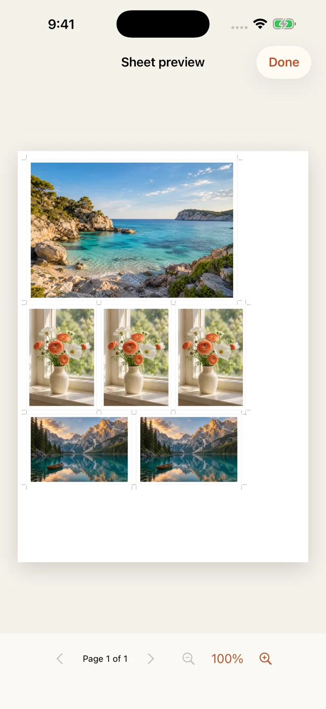
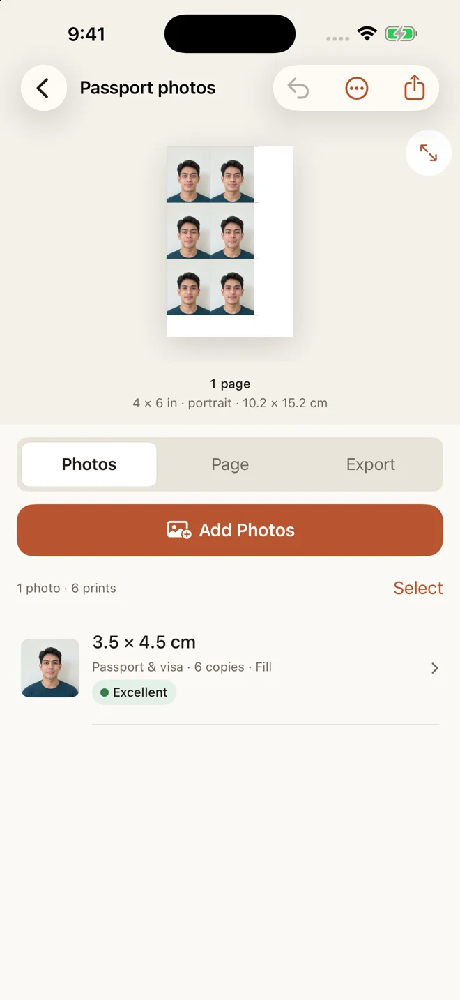
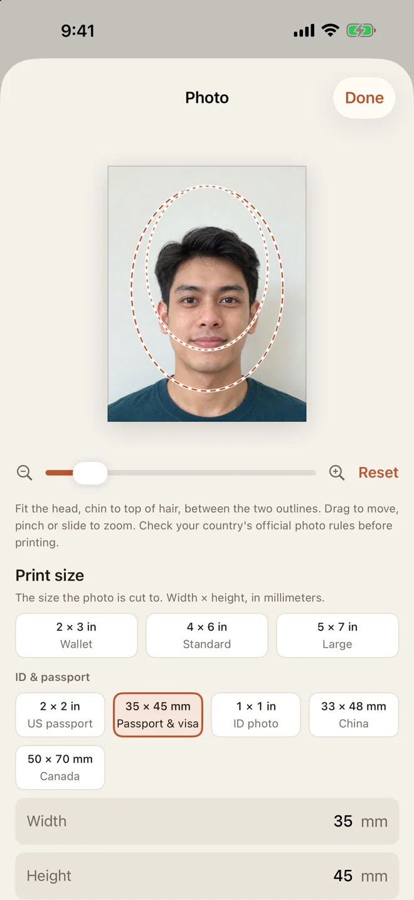

Photos that fit your frame
4 × 6, 5 × 7, wallet sizes or your own dimensions. Keep the whole photo with Fit, or adjust the crop with Fill.
Print an exact-size photo →Your pocket print studio · iPhone & iPad
Print photos at the size you mean. Arrange your favourites, passport photos or ID pictures on one sheet. Send to AirPrint or save a ready-to-print PDF.
First print or PDF included. Optional one-time Pro unlock.
From camera roll to keepsake
A few photos for a frame. A full sheet of ID pictures. A little collection of memories. Choose the size; Photo Print takes care of the layout.
4 × 6, 5 × 7, wallet sizes or your own dimensions. Keep the whole photo with Fit, or adjust the crop with Fill.
Print an exact-size photo →Choose a portrait, set its dimensions and repeat it on a sheet. Add cut guides for easier trimming.
Make an ID photo sheet →Mix sizes on A4 or US Letter. Preview the arrangement and check photo quality before you print.
Arrange a photo sheet →A closer look
A clear preview, precise dimensions and a crop you control.



Actual app screens with demo photos.
Small photos, carefully sized
Set a precise size, adjust the crop and use the head-size guide to help position your portrait. Repeat copies on 4 × 6, A4 or Letter paper.
Photo Print is a sizing and printing tool. It does not validate official requirements or guarantee acceptance.
How to print 2 × 2 inch photos →Three simple steps
Import from your photo library. Choose a preset or enter your own dimensions.
Choose paper, adjust crops, add borders and cut guides, and preview the finished page.
Use AirPrint, or take a PDF to your computer or print shop. Print PDFs at 100% and measure your first sheet.
Try your first finished sheet
One purchase. No recurring subscription.
See the current one-time price in the app for your country or region.
A few useful answers
Yes. Photo Print lets you enter a width and height in inches, centimetres or millimetres, arrange the photos on a sheet, then print with AirPrint or export a PDF. For PDFs, choose Actual size or 100% in your print dialog. Printer margins and borderless enlargement can affect the final result; check your first print with a ruler.
The app is free to download. Your first completed print or PDF export is included, along with three saved layouts. Photo Print Pro is a one-time in-app purchase for unlimited prints and PDF exports, unlimited layouts and saved page setups. The current price for your region appears in the app. There is no subscription.
No. Photo Print sets the physical dimensions and includes a head-size guide, but does not check official passport, visa or ID requirements or guarantee acceptance. Check the authority’s current rules before printing.
You need an AirPrint-compatible printer for direct printing from the app. You can also save a PDF and print it from a computer or print shop at Actual size or 100%.
Photo importing, cropping, layout and PDF creation happen on your device. Photo Print does not upload your photos to a server. Purchases are handled through Apple and RevenueCat; Settings can contact Apple to load the developer’s other apps.
Photo Print is designed for iPhone and iPad running iOS or iPadOS 17 or later. You can transfer an exported PDF to a computer for printing.
The printing notebook
Check dimensions and print pixels with the photo size calculator →
Practical answers for paper sizes, ID sheets and print settings.
Check scaling, paper selection and printer margins.
Fix a wrong-size print →Exact dimensions in millimetres, plus a printing walkthrough.
Read the 2 × 2 guide →A practical layout guide for A4 and US Letter.
Read the layout guide →Your next photo sheet starts on your iPhone or iPad.